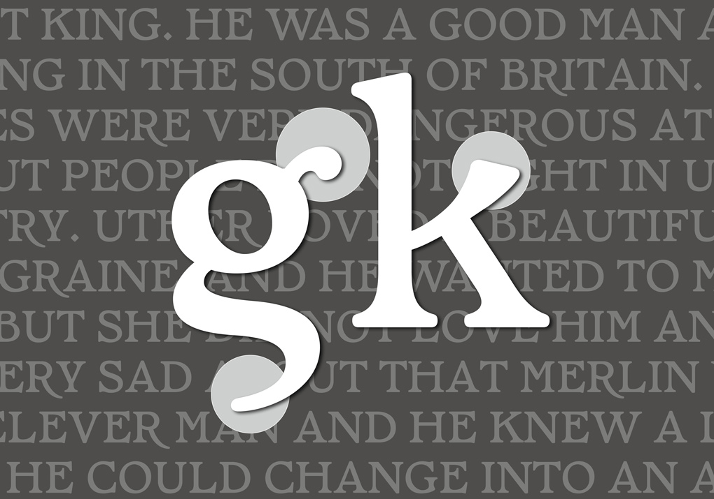
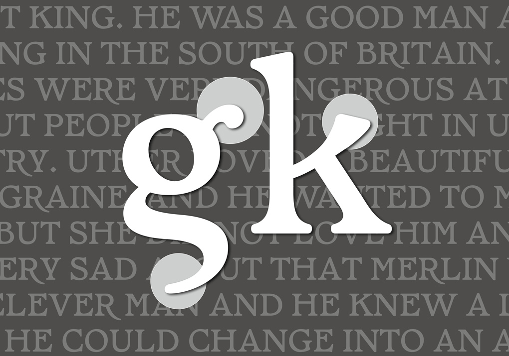

CÉLINE JOUANDET
TYPE & GRAPHIC DESIGN
 

PENDRAGON
DISPLAY TYPEFACE 5 WEIGHTS AND ITALIC, 155 GLYPHS
Pendragon is a display type family with 5 weights, ranging from regular to Extrabold and an italic version. Pendragon features a series of alternative glyphs and ligatures, typical from the medieval descendants of the Roman capitalis and uncials. Pendragon’s name was also an inspiration for a lot of alternates, particularly for the “g” which evoque a dragon’s tail.
TYPE DESIGN AND PRINT
2023 Bookmarks, 2023
66 x 202 mm
This project is a collaboration between Sonia Verdiesen and
myself, and involves the creation of a unique typeface design for
a new year’s card that can also be used as a bookmark.
Our goal was to design a typeface inspired by calligraphic tools
and the beauty of stems and leaves of flowers.

IDENTITY, TYPOGRAPHY & PRINT
Unboxing, 2022
Exhibition Identity, Poster,
Lettering
and Handout
I was commissioned to design the visual identity for the Unboxing exhibition that took place in April 2022 at the Boo2 project space in Amsterdam. The project was initiated by Zuza Banasinska and Jeanne Vrastor, both former students of the Sandberg Institute, with the goal of uniting works around the theme of perception and navigation, under an original identity. To create the lettering, I drew inspiration from brown seaweed.

TYPE DESIGN
Italic, 70 glyphs
Lady Spider is a italic typeface that draws inspiration from Flemish calligraphy, particularly from the calligraphies of Maria Strick. I started working on this font during my diploma project in 2021, which focused on archonophobia. My aim was to showcase a different perspective on spiders, which are often associated with dirt and morbidity. Instead, I sought to demonstrate that the spider’s world is actually airborne, sensitive, and sensory in nature.
EDITORIAL DESIGN
Heleen, 2022
190 x 255 mm, 224 pages
I completed an editorial design project for a book that showcases the paintings of Heleen Vriesendorp. The goal of the project was to create a sense of rhythm and a logical order for the paintings to tell Heleen’s story in a simple and natural layout. Together with Heleen, her family, printers, and binders, we successfully brought the project to life. The experience of collaborating with the artist allowed us to create a meaningful book that celebrates Heleen’s artwork in a thoughtful and understated manner.

POSTER DESIGN, TYPOGRAPHY
Dit&Dat, 2022
Poster
Sonia Verdiesen is a former photography student at the HKU. We made this poster together for her upcoming exhibition Dit & Dat at Project space Lokaal in Utrech. We chose my font Astraea to promote her installation. The Dit & Dat installation is an invitation to Sonia’s work and her research process. It questions her place as a woman, and the opposition between the ugly and the sublime.
TYPE DESIGN
Astraea, 2021
Regular, 221 glyph
Astraea is a revival of Astrée by Robert Girard. For this revival, I wanted to be close to the historical inspiration of Garaldes and Elzevir, and also retake the name Astrée and it’s a universe that comes from Honoré d’Urfé’s book. My version of Astrée offers a variety of ligatures and special glyphs for stylistic uppercase. I also wanted to harmonise the specificities of lower and uppercase R.


EDITORIAL DESIGN & TYPE DESIGN
Lady Spider, Diploma Project 2021
203 x 277 mm, 160 pages
Measuring an average of 5 cm, the spider is an everyday companion. Its informality scares us: with its multiple eyes, its hairy body and its eight legs. Wrongly considered as a threat, it is not at all lethal for human beings. The objective of this project is to create editorial and typographic supports to demystify the spider. To get out of an anthropocentric conception of the world, to know so as not to fear.
LETTERING
The Butterfly Effect,
2022 Lettering
I was commissioned by Mathilde Renault to create lettering for her large-scale project, The Butterfly Effect, which is an interactive and immersive work that depicts the journey of a shooting star. Our goal was to create an epic lettering that blends science and poetry. In The Butterfly Effect, Mathilde Renault synthesises planetary science, aerospace engineering, fragrance technology, and digital programming to map the journey of a former shooting star to Earth. Through light, sound, smell, and video, the 4.5-billion-year-old meteorite is presented in a multi-sensory installation that reveals its hidden genetics. The project was showcased at the 35th edition of the International Documentary Film Festival Amsterdam.